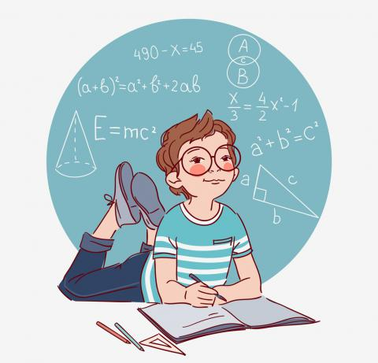

Математика (на старогръцки: μάθημα, матема – знание, изучаване, учене) е изучаването на области като количествата (т.е. теория на числата), математически – абсктрактни структури (включително пространствените структури), типовете физично пространство, извършването на изчисления и математически анализ.
| Не винаги хората са използвали десетичната бройна система. Преди това се използваше системата от 20 числа. |
| В Рим никога не е имало число 0, въпреки факта, че хората там са умни и знаят как да броят. |
| Благодарение на математиката е известно, че равенството може да бъде завързано по 177147 начина. |
| Египтяните не познавали дроби. |
| Има световен ден по математика. |
| Благодарение на математиката възникна логиката. |
| Два неофициални празника имат числото Pi: 14 март и 22 юли. |
| Числото 13 се смята за нещастен заради библейската легенда. |
| Ако преведете числото 4 от китайски, това означава „смърт“. |
| Голям брой хора смятат 7 за щастливо число. |
Математиката като извънкласен предмет е едно допълнително развиване на мозъка и забавление с числата.